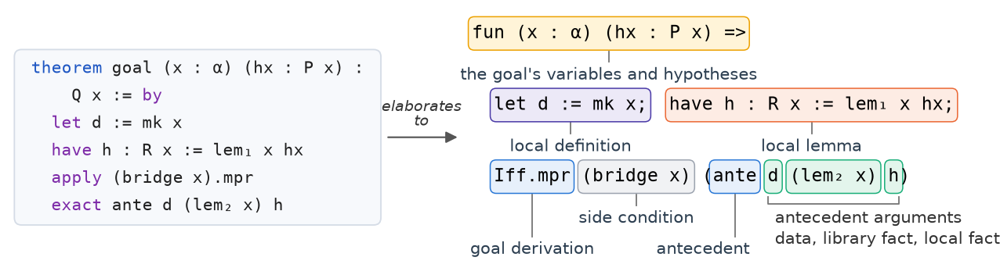
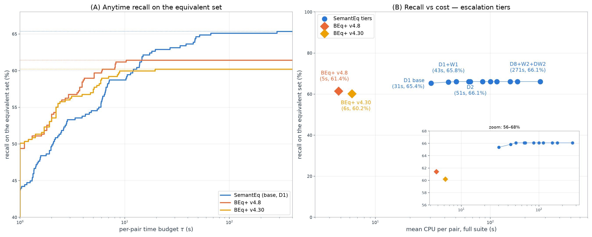

Implements a deterministic Lean 4 metaprogram and a proof-term auditor that judge equivalence of autoformalized Mathlib statements on ProofNetVerif.
Abstract
Statement autoformalization translates mathematics from natural language into a proof assistant such as Lean 4, and models now do it at scale. As provers get stronger, the burden of correctness shifts from the proof to the statement, that is, to whether the formal statement faithfully translates its source. Given a trusted reference formalization, the natural test is logical equivalence, and it proves too much. $P \leftrightarrow Q$ holds trivially for any two statements $P$ and $Q$ that the library proves, because a prover can prove each separately and pass through $P \leftrightarrow \mathrm{True} \leftrightarrow Q$. The stronger the prover, the more unrelated pairs pass. Earlier methods restrict the prover and check that each proof names the other statement. We introduce SemantEq, a more principled relation that instead requires each statement to turn into the other only through a chain of allowed steps, such as logical rearrangement and rewriting with the library's own equations. Our programs judge a proof by the proof term Lean checks, not by its tactic script. SemantEq-Eval, a search without a model, reaches 100% precision and 65.6% recall on the ProofNetVerif test split under our adjudicated labels, against 95.8% and 61.8% for BEq+, and an 8.9-fold increase in its CPU time adds at most three pairs. A language model finds more proofs, but under two of four prompts it proves both directions of about two in five of the non-equivalent pairs. SemantEq-ProofAudit audits each model-written proof under a policy derived from the relation and accepts none of the 104 non-equivalent pairs, and it raises recall on 407 equivalent pairs from 65.4% to 81.1% under the best prompt. Separating the generation of equivalence proofs from their acceptance lets a stronger prover raise recall without changing what an acceptance means. We release code and data at: https://github.com/hlxr89/SemantEq
Problem
Autoformalization evaluators that test logical equivalence against a reference formalization accept unrelated pairs, because any two library-provable statements are trivially equivalent. Earlier methods such as BEq+ restrict the prover and check that the antecedent's name appears in the script, which still admits false acceptances.
Approach
SemantEq defines equivalence as a chain of allowed steps, such as logical rearrangement and rewriting with library equations, in each direction. SemantEq-Eval is a model-free Lean metaprogram that searches for such chains and audits the resulting proof term rather than the tactic script. SemantEq-ProofAudit checks proofs supplied by a language model against a policy derived from the relation. It assigns each proof-term position a role: goal derivation, antecedent argument, or rewrite justification.

Figure 4: The auditor gives each position in a proof term a role. The same library fact can be admitted as the justification of a rewrite and refused when it proves the goal directly.
Results
On the ProofNetVerif test split under adjudicated labels, SemantEq-Eval reaches 100% precision and 65.6% recall, against 95.8% and 61.8% for BEq+. With LLM-written proofs, ProofAudit accepts none of the 104 non-equivalent pairs and raises recall on 407 equivalent pairs to 81.1%.

Figure 3: (A) Recall attainable when each pair is allowed at most \tau seconds, computed from the uncapped runs on the equivalent set . \texttt{BEq}+ leads below roughly 15 s per pair, and the curves level off at 65.4\% for SemantEq-Eval and at 61.4\% and 60.2\% for \texttt{BEq}+ on Lean v4.8 and on our toolchain. (B) Recall against mean cost per pair for each search configuration (Appendix I ).
System
TP
FP
Precision
Recall
F1
SemantEq-Eval
242
0
100.0
65.6
79.2
BEq+
228
10
95.8
61.8
75.1
ProofNetVerif test split, adjudicated labels (1,303 pairs)